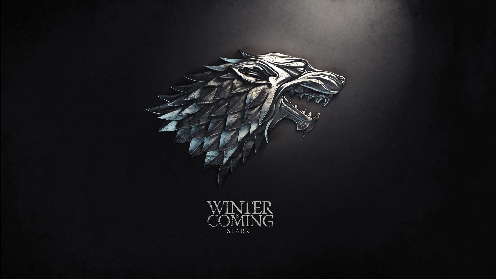

Старки
Старки (ориг. House Stark) — великий дом Вестероса, короли Севера.
Очень древний род. Считается, что их родословная не прерывалась со времён Брандона Строителя, жившего восемь тысяч лет назад. Как и многие другие дома Севера, Старки сохранили веру в Старых Богов.
История
До событий сериала
Долгое время Старки правили своей областью как короли Севера. Но после вторжения на Вестерос Эйгона I Таргариена король Торрхен Старк сдался, увидев драконов, которых Таргариен привёл с собой на битву на Пламенном поле. Так Старки получили титул верховных лордов Севера и стали служить королю на Железном троне как хранители Севера.
Спустя триста лет лорд Эддард Старк породнился с домом Талли, женившись на Кейтилин Талли. Во время восстания Роберта Баратеона Эддард и его люди сражались на стороне Роберта и помогли ему взойти на трон.
Известные представители
- Лорд Эддард Старк, по прозвищу «Нед», второй сын лорда Рикарда Старка, бывший глава дома, верховный лорд Севера, хранитель Севера, лорд Винтерфелла, десница короля Роберта Баратеона. Был ложно обвинён в измене и казнён Илином Пейном по приказу Джоффри Баратеона в 298 году от З.Э.
- Леди Кейтилин Старк, урождённая Талли, жена лорда Эддарда. Была убита на Красной свадьбе Чёрным Уолдером Риверсом в 300 году от З.Э.
- Король Робб Старк, по прозвищу «Молодой Волк», старший сын лорда Эддарда и леди Кейтилин. Король Севера и Трезубца, лорд Винтерфелла, верховный лорд Севера. Был убит на Красной свадьбе Русе Болтоном в 300 году от З.Э. в возрасте 19 лет.
- Королева Талиса Старк, урождённая Мейгир, жена короля Робба. Была убита на Красной свадьбе Лотаром Фреем в 300 году от З.Э.
- Королева Санса I Старк, старшая дочь лорда Эддарда и леди Кейтилин. Королева Севера и нынешняя глава дома.
- Принцесса Арья Старк, младшая дочь лорда Эддарда и леди Кейтилин. Отправилась в экспедицию на запад Вестроса за Закатное море.
- Король Брандон I Старк, по прозвищу «Сломленный», второй сын лорда Эддарда и леди Кейтилин, нынешний Король Андалов и Первых Людей, Лорд Шести Королевств и Защитник Государства.
- Рикон Старк, третий и самый младший сын лорда Эддарда и леди Кейтилин. Был убит лордом Рамси Болтоном перед битвой бастардов в 303 году от З.Э. в возрасте 11 лет.
- Джон Сноу, по прозвищу «Белый Волк», сын Лианны Старк и Рейгара Таргариена, выдаваемый за бастарда Эддарда Старка. Бывший лорд-командующий Ночного дозора. Был убит братьями Ночного дозора, но воскрешён Мелисандрой. Бывший глава дома, лорд Винтерфелла, верховный лорд Севера и хранитель Севера. Отправлен в ссылку в Ночной дозор за убийство королевы, которой он присягнул на верность — Дейнерис Таргариен.
- Бенджен Старк, третий сын лорда Рикарда Старка и младший брат лорда Эддарда, первый разведчик Ночного дозора, пропал без вести. Был убит Белыми ходоками, но его воскресили дети леса. Окончательно погиб, спасая Джона Сноу от армии вихтов во время вылазки за вихтом за Стеной в 304 году от З.Э.
Предки
- Король Брандон Строитель, легендарный основатель дома Старков. Во времена его правления были отстроены сам Винтерфелл и Стена, учреждён Ночной дозор. Согласно легендам, был первым королём Севера.
- Король Брандон Крушитель, король Севера, объединился с королём-за-Стеной Джорамуном и победил Короля Ночи.
- Король Доррен Старк, король Севера. Во время его правления отряд Ночного дозора отправился в поход за Стену, сразился с великанами и встретился с детьми леса.
- Король Джон Старк, отец Рикарда, король Севера. При его правлении началось Объединение Севера.
- Король Рикард Старк, по прозвищу «Смеющийся Волк», сын Джона, король Севера. Убил последнего Болотного короля и женился на его дочери, а Перешеек отдал дому Ридов.
- Король Теон Старк, король Севера, окончательно объединил Север вокруг себя и защитил его от нашествия андалов.
- Король Родрик Старк, король Севера, победил железнорождённых и освободил от них Медвежий остров, который был передан дому Мормонтов.
- Лорд Карлон Старк, основатель дома Карстарков.
- Лорд-командующий Озрик Старк, самый молодой лорд-командующий Ночного дозора, был избран в возрасте 10 лет.
- Лорд Торрхен Старк также известный как «Король, преклонивший колено». Последний король Севера, во время Завоевательной войны сдался без боя Эйгону I Таргариену, тот сделал его первым хранителем Севера.
- Лорд Криган Старк, бывший глава дома, лорд Винтерфелла, верховный лорд Севера и хранитель Севера во времена Танца драконов. Десница Эйгона III, пробыл на этом посту всего один день, а затем сложил с себя полномочия.
- Лорд Рикард Старк, бывший глава дома, лорд Винтерфелла, верховный лорд Севера и хранитель Севера. Отец Брандона, Эддарда, Лианны и Бенджена Старков. Был сожжён заживо по приказу Эйриса II Таргариена в 280 году от З.Э.
- Брандон Старк, старший сын Рикарда и его наследник. Погиб, задушив сам себя петлёй, пытаясь дотянуться до меча, чтобы спасти отца в 280 году от З.Э.
- Принцесса Лианна Старк, дочь Рикарда. Умерла во время родов своего сына, Эйгона Таргариена, в Башне Радости в Дорне в 281 году от З.Э.
Военные силы
Из-за огромного размера Севера собрать всю армию северных лордов довольно сложно, так как некоторым из них требуются месяцы, чтобы добраться до Винтерфелла, и воинов необходимо обеспечивать продовольствием ещё до того, как армия двинется в бой. Из-за этого 18 000 воинов, которые отправились с Роббом в Западные земли, это лишь часть военной мощи региона, лишь те, кто сумел собраться достаточно быстро.
К моменту битвы на Жёлтом Зубце к армии Севера присоединились также вассалы Талли и силы Фреев, по приблизительным подсчетам она должна была превосходить силы Ланнистеров.
После убийства Робба, Талисы и Кейтилин Старков на Красной свадьбе войска были уничтожены.
На момент битвы бастардов армия Старков состояла из 2405 человек, в основу которой легли одичалые, а также солдаты Хорнвудов, Мейзинов и Мормонтов. После битвы в живых осталось меньше тысячи воинов, но Старки были во второй раз со времён короля Торрхена Старка провозглашены Королями Севера и все северные лорды вновь присягнули им на верность.
На данный момент в армии Старков насчитывается по меньшей мере 20 000 человек.